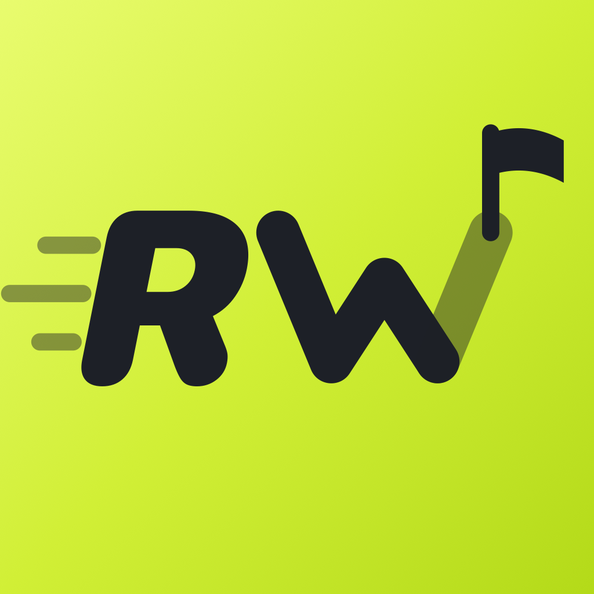
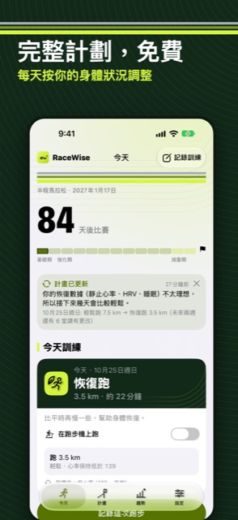
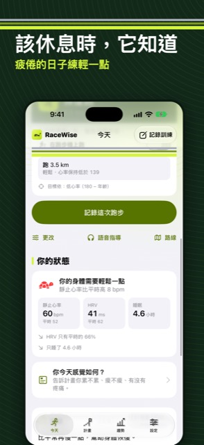
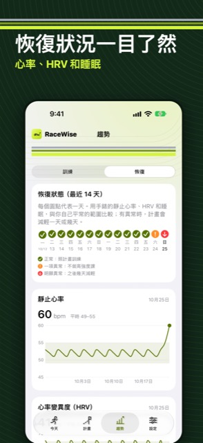
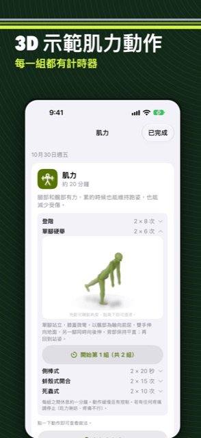
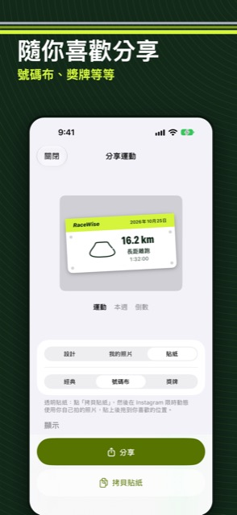

RaceWise 媒體資料
報道 RaceWise 所需的資料都在這裡。截圖和圖示可自由用於有關本 app 的報道。
關於 RaceWise
RaceWise 是一個 iPhone app，為比賽、個人目標或新的運動習慣，排一個安全、循序漸進的訓練計劃，並在訓練期間一直調整。支援跑步、游泳、單車、划艇和行山，一項或幾項一起練都可以。
一種運動的完整計劃免費，包括所有安全檢查和 Apple Watch 課表。可選的訂閱服務 RaceWise Pro 加入 Garmin Connect 雙向同步、一個計劃練幾種運動、完整比賽日計劃、路線、小工具和動作計時器。
- 跟身體狀況調整：Apple 健康的靜止心率、HRV、睡眠和每日身體狀況，只會令計劃變得較輕鬆
- 安全規則：每週訓練量慢慢增加，新手和 60 歲或以上有更低的上限；所有運動加起來，辛苦課都不會連續兩天
- 教練在 iPhone 上使用 Apple Intelligence 解釋計劃，但不會改動任何數字
- 重視私隱：沒有廣告、沒有分析工具、不用註冊；計劃只經用戶自己的 iCloud 同步
- Garmin Connect：課表傳到 Garmin 行事曆，完成的活動自動傳回（Pro）
- 英文、廣東話、國語（繁體中文）、日文和韓文

- 開發者
- Howard Au，英國
- 平台
- iPhone（iOS 26），課表可放到 Apple Watch
- 價錢
- 免費；RaceWise Pro 為可選訂閱
- 推出
- 2026 年 11 月
- 地區
- 英國、美國、加拿大、澳洲、新西蘭、香港、澳門、台灣、新加坡、日本、南韓
- App Store
- 推出當日加上連結
- 網站
- racewiseapp-stack.github.io

截圖
點擊截圖可下載原尺寸（1320 × 2868）。










開發者
RaceWise 由英國獨立開發者 Howard Au 製作，由設計、開發到支援都由一個人負責。
聯絡
電郵 racewiseapp@gmail.com。媒體可索取 Pro 代碼。
Apple、Apple Watch 和 Apple Intelligence 是 Apple Inc. 的商標。Garmin 和 Garmin Connect 是 Garmin Ltd. 或其附屬公司的商標。RaceWise 並非由 Apple 或 Garmin 製作或認可。